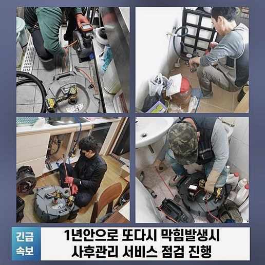
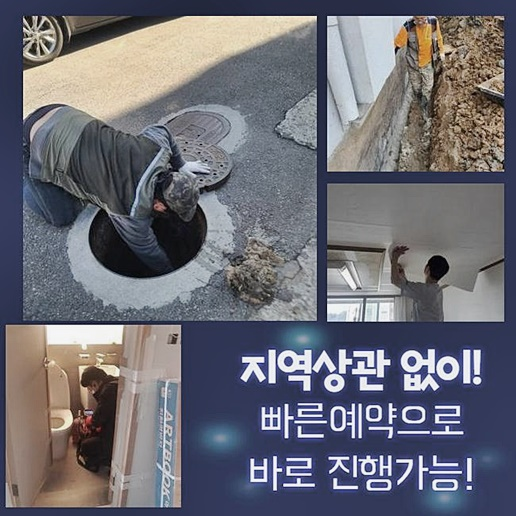
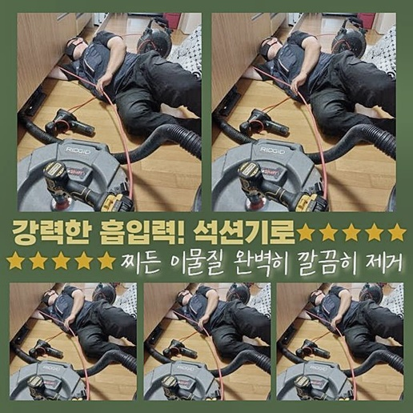
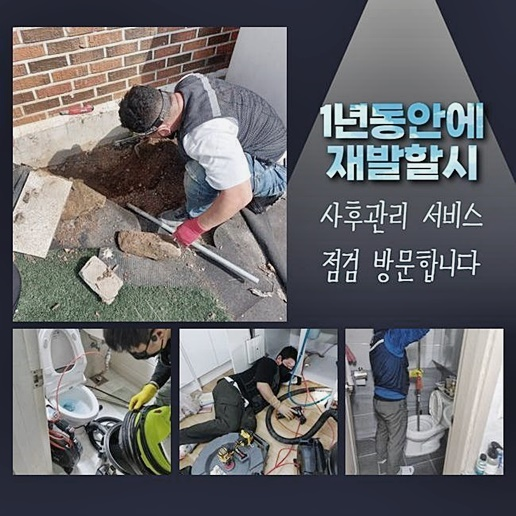
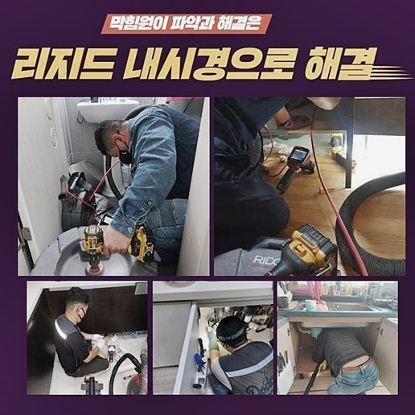
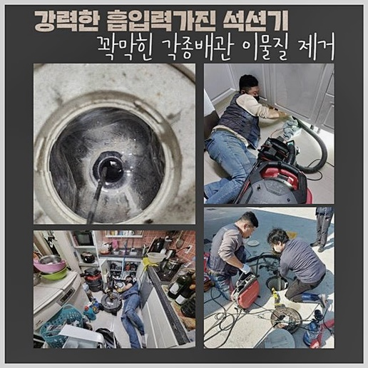
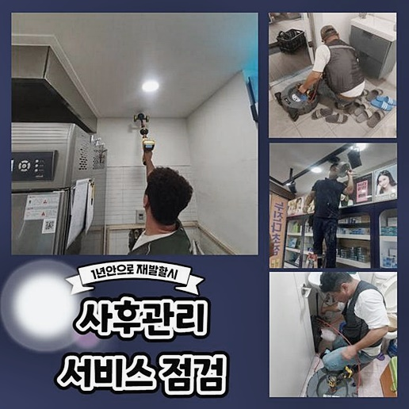

🏠 인천 경서동변기막힘 왕길동 하수구뚫어주는업체 수리업체
용인시 처인구 배관막힘 전문 시공 후기

📋 작업 개요
- 위치: 용인시 처인구, 수원시 영통구, 화성시 동탄
- 서비스 유형: 배관막힘, 고압세척, 내시경점검
- 작업 일시:
- 업체명: 하수구수사대 (010-5615-2118)
🔍 문제 상황
인천 경서동변기막힘 왕길동 하수구뚫어주는업체 수리업체
막힘문제를 전문적으로 뚫어드리는 하수구전문업체입니다
이번시간엔 어디서든 중요하다고 할수있는 하수도에대해 이야기하려고 합니다
작업했던 내용을 토대로 배관막힘과 연관하여 알아보도록 해봐요!
막히는문제를 처리하려면 배관전문가인 저희들이 발행하게된 오늘내용이 참고하시면 좋을거에요
욕실배수구 막힘때문에 답답하다고 말씀하시는 고객님에게 출동요청을 받았어요
며칠전부터 물이느린상태로 흘러가게되더니 결국에는 막히는일이생겨 흘러가지않았다고 하셨습니다
막혀버린 하수도를 뚫으려고 여러의 기계를 준비하여 고객의댁으로 출동하였죠
도착한뒤에는 욕실쪽을 체크했습니다
배수구를 들춘후 안쪽상황을 꼼꼼하게 체크해봤어요
하수구의 입구쪽까지 물이차버린 상태인것이라고 알수있었어요
약간의물을 빠지게해봤지만 정상적으로 흐르지못하고 역류증세까지 발생한 상황이었죠
첫번째로 막고있는물들을 흡입해주기로 했습니다 청소기처럼 빨아들이는 석션장비를 투입했죠
비누조각과 같이 소량의오염물로 인해서 가볍게 막힌경우엔 흡입장비로 빨아들이는걸로 하수구막힘 현상이 해결될수있습니다

🔎 원인 분석
💡 전문가 진단: 정밀 진단 장비를 사용하여 슬러지의 고착 여부를 판명하고 타격/세척 작업을 실시했습니다.
오물을 흡입해보았지만 막힌이유인 고착물질이 제거되지못했어요 오늘작업장소는 단순하게 막힌것이 아니었죠
안쪽에뭔가 꽉막힌게 확실했는데요 그렇기때문에 하수관안을 들여다보기로 했답니다
배수구안속을 살피는 도구를 투입하기위해서는 역류한물을 제거해줘야합니다
다시한번 흡입기로 배수구내의 물을빨아올렸죠 흡입하고나서 하수구내시경을 투입했는데요
하수도내시경은 관끝에 모니터링시켜주는 카메라장비가 달려있는기계에요
육안으로 살필수없는 하수구안의 상황들을 모니터화면으로 확인하게끔 해주는기기죠
내시경장비를 투입하여 검사해봤는데요 입구쪽부터 다량의 석회물이 쌓인게보였어요
굳은오염물이 들어있는건 오랫동안 퇴적되었다는 의미랍니다
시간이지남에 따라서 딱딱한상태로 굳게되는 석회물질은 돌처럼 단단하여 제거하기란 어렵습니다
카메라기기를 깊숙히 투입해서 하수구깊은 부분까지도 검사해봤죠
머리카락하고 다양한이물이 굴러다녔어요 배관안속의 구부러진부분에서는 잔여물질들이 뭉쳐서 퇴적되었어요
빨리 이물질을 제거한후 배관세척을 진행해야하는 긴급한 상황이었답니다
단단한오염물을 무리해서 제거하고자 한다면 하수관내에 손상을일으킬수있죠
하수관이 깨지면 물이새는등 2차피해가 일어날수있습니다
화학적인방식을 사용해서 진행하기로 했는데요

🔧 작업 과정
고착물질을 녹여주는 하수구클리너를 사용해보았죠 거품이생기게되며 퇴적되었던 석회물질들이 없어지기 시작했습니다
시간이지날수록 석회가 중화가된다면 잘게분해해서 떼어낼수있죠
중화가 완료되고나서 세척작업을 진행했습니다
샤프트기기를 이용해서 작업하기로했죠 샤프트기계는 노즐끝에 사슬이달려진 장비인데요
모터를키면 쇠사슬쪽이 돌아가는데 이회전력을 사용하여 고착이물들을 분쇄시켜요
누그러진 석회와 잔해물을분해해 빨아올릴수있도록 만들었어요
분쇄기기를 활용할경우 갈림과동시에 하수도청소가 가능하죠
앞쪽의 사슬이회전할때 사슬길이를 조정하여 작업반경을 결정할수있어요
넓든지좁든지 크기에맞춰서 세척이가능하여 효과적으로 청소할수있죠
배관내부까지 투입하여 꼼꼼히 작업하였죠
오염물을 제거해내면서 하수구카메라를 활용했는데요
내시경으로 막힌모습을 체크해가며 이물질이 모인곳을 집중하여 뚫어주기로했죠
뚫는작업중 물을흘려서 분해작업이 용이할수있도록 만들어주었는데요
상당한양의 오염물이 있었기에 단번의 청소로는 해결하기어려웠죠
하수도내시경과 분해장비를 여러번 투입하면서 반복적으로 착수해주었죠
욕실바닥은 샤워할때나 청소하게될때 흙이나 머리카락이 하수구안으로 진입되기 쉬운곳이죠
욕실배수구 거름망설치를 통해서 잔여물이 투입될수없게끔 꼼꼼히 막아주는것도 좋은방법이죠
분쇄한 오염물들을 물과빨아들여 제거해냈습니다
물이빠지는 소리가나며 잔여물들이 제거되었죠 석션기통이 가득찰만큼 상당량이었죠
분쇄와 청소를 마무리한후에 또 내시경기기로 확인해보았는데요
퇴적되었던 석회물들이 말끔하게 없어졌습니다 내부쪽의 오물들도 없어졌는데요
배관내벽이 말끔해진 상태를 확인했습니다 마지막과정으로 고객분과같이 배수검수를 해봤습니다
양동이쪽에 물을채워 화장실배수구에 흘려보냈어요


✅ 작업 완료
원활히 물이빠져나가는걸 확인시켜드린뒤 마치게되었어요
오래된고착물이 주된원인이었던 배관막힘 현장이었는데요
오늘 작업한것처럼 확실하게 뚫어내기위해선 원인먼저 파악한후 이에맞는 해결방법을 마련하는게 중요하답니다
하수구막힘이 생겼다면 다양한경험이있는 베테랑을 탐색해보세요!
60분이내로 현장으로 도착할수있고 투명한 작업계획으로 공개하기때문에 걱정을 하지않아도 된답니다
저희가 출동해서 고객님이 손대실일없게끔 시작부터끝까지 깔끔히 처리할테니 염려마시고 상담요청해보세요!




⚠️ 하수구 배관 막힘 예방 및 관리 가이드
- ✅ 머리카락, 비닐, 물티슈 등 물에 분해되지 않는 이물질은 절대 흘려보내지 마세요.
- ✅ 기름기 많은 식기는 설거지 전 키친타올로 먼저 기름때를 닦아내세요.
- ✅ 주기적으로 배수구에 뜨거운 물을 가득 부어주어 유지방 고착을 방지하세요.
- ✅ 작업 후 1년 이내 재발 시 무상 A/S 보증 서비스를 제공합니다.
💡 핵심 정리
- 확실한 장비 작업(내시경 점검 및 샤프트 스케일링)으로 원인을 뿌리 뽑습니다.
- 작업 후 1년 이내에 동일한 부위 재발 시 100% 무상 A/S 서비스를 보장합니다.
- 서울 · 경기 · 인천 전 지역에 24시간 언제든 긴급 출동할 수 있도록 항시 대기 중입니다.
❓ 자주 묻는 질문 (FAQ)
🚨 용인시 처인구 배관막힘 문제로 고민이신가요?
정확한 원인 진단과 확실한 시공으로 재발 없는 해결을 약속드립니다.
24시간 긴급 출동 | 서울 · 경기 · 인천 전지역 | 1년 내 재발 시 무상 A/S